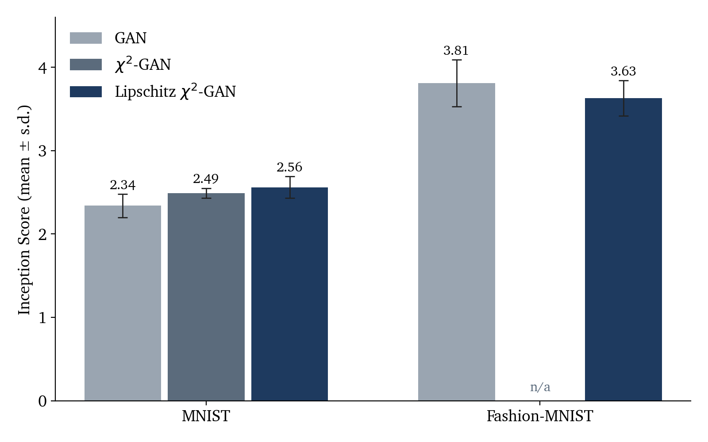

1The GAN objective
A generator \(g:\mathcal{Z}\to\mathcal{X}\) maps a latent vector \(z\sim P_Z\) to a sample \(g(z)\sim P_g\). A discriminator \(D:\mathcal{X}\to[0,1]\) estimates the probability that its input is a real sample \(x\sim P_{\mathrm{data}}\). The two are trained on the minimax problem
For a fixed generator, the inner maximization has the pointwise solution
Substituting \(D^\star\) back gives \(2\,\mathrm{JSD}(P_{\mathrm{data}}\,\Vert\,P_g)-\log 4\). Training the generator therefore minimizes the Jensen–Shannon divergence between the data and model distributions. When the two distributions have nearly disjoint supports, this divergence saturates and its gradients carry little information, which is a known source of unstable GAN training.
2χ2 and Wasserstein alternatives
Pearson χ2 divergence
An \(f\)-divergence admits a variational lower bound in terms of a critic \(T:\mathcal{X}\to\mathbb{R}\) and the Fenchel conjugate \(f^\ast\) of \(f\):
For the Pearson χ2 divergence, \(f(t)=(t-1)^2\) and \(f^\ast(s)=\tfrac{s^2}{4}+s\), which gives the χ2-GAN objective.
Wasserstein distance
The WGAN instead measures the Wasserstein-1 distance, which by Kantorovich–Rubinstein duality is a supremum over 1-Lipschitz critics:
The Lipschitz restriction keeps the critic smooth, so it provides useful gradients even when the two distributions barely overlap.
3Method: a Lipschitz-constrained χ2 critic
The Lipschitz condition is read as a restriction on the function class of the critic rather than as part of the divergence. Applying it to the χ2 objective gives
Penalty form
Treating \(\lVert\nabla T\rVert\le 1\) as a constraint and moving it into the objective with a multiplier, in the spirit of a KKT relaxation, gives the trained objective
where
- \(\hat{x}\)
- a point on the segment between a real sample and a generated sample, as in the WGAN gradient penalty
- \(\lambda_{\mathrm{gp}}\)
- the strength of the Lipschitz penalty
The quadratic term in \(f^\ast\) keeps the χ2 objective’s penalty on large critic values, while the gradient penalty limits how sharply the critic can change between the real and generated distributions.
4Results
| Dataset | GAN | χ2-GAN | Lipschitz χ2-GAN |
|---|---|---|---|
| MNIST | 2.34 ± 0.14 | 2.49 ± 0.06 | 2.56 ± 0.13 |
| Fashion-MNIST | 3.81 ± 0.28 | – | 3.63 ± 0.21 |

On MNIST the Lipschitz χ2-GAN obtains the highest mean score, 2.56 against 2.49 for the χ2-GAN and 2.34 for the standard GAN. On Fashion-MNIST its mean is lower than the standard GAN’s, 3.63 against 3.81. The standard deviations overlap in both comparisons, so the differences are small relative to run-to-run variation.
5Discussion
Viewing the Lipschitz condition as a constraint on the critic’s function class makes it portable across divergences: the same gradient penalty that defines the WGAN can be attached to a χ2 critic. In this small study the combination helped on MNIST but not on Fashion-MNIST. A firmer conclusion would need more seeds, a sweep over \(\lambda_{\mathrm{gp}}\), the missing χ2-GAN run on Fashion-MNIST, and a sample-quality metric beyond the Inception Score, such as the Fréchet Inception Distance.
Key references
- I. Goodfellow, J. Pouget-Abadie, M. Mirza, B. Xu, D. Warde-Farley, S. Ozair, A. Courville, and Y. Bengio. Generative Adversarial Nets. NeurIPS, 2014.
- S. Nowozin, B. Cseke, and R. Tomioka. f-GAN: Training Generative Neural Samplers using Variational Divergence Minimization. NeurIPS, 2016.
- X. Mao, Q. Li, H. Xie, R. Y. K. Lau, Z. Wang, and S. P. Smolley. Least Squares Generative Adversarial Networks. ICCV, 2017.
- M. Arjovsky, S. Chintala, and L. Bottou. Wasserstein Generative Adversarial Networks. ICML, 2017.
- I. Gulrajani, F. Ahmed, M. Arjovsky, V. Dumoulin, and A. Courville. Improved Training of Wasserstein GANs. NeurIPS, 2017.
- T. Salimans, I. Goodfellow, W. Zaremba, V. Cheung, A. Radford, and X. Chen. Improved Techniques for Training GANs. NeurIPS, 2016.